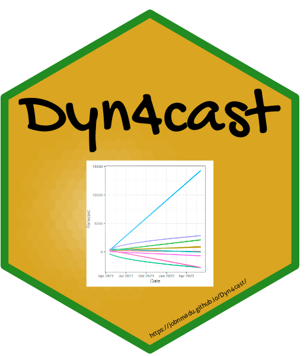

Convert Likert Data to Relative Scores and knowledge-based Adaptive Capacity
Source:R/relative_likert.R
relative_likert.RdAdaptive capacity refers to the ability of systems—biological, social, or institutional—to adjust to environmental changes, capitalize on emerging opportunities, and mitigate potential threats in order to preserve essential functions. In the context of climate change, adaptive capacity denotes the competence of social-ecological systems to cope with present variability and prepare for uncertain future conditions.
From a machine learning perspective, adaptive capacity is closely linked to the system’s ability to process large-scale, heterogeneous data sources, identify patterns, and support the development of predictive models and adaptive strategies. Key components of adaptive capacity include access to relevant and reliable information, computational infrastructure, financial and human capital, and strong social and institutional networks.
Machine learning can enhance adaptive capacity by enabling dynamic learning from historical and real-time data, improving climate risk assessments, and optimizing adaptation strategies. Moreover, the iterative nature of model refinement and feedback integration mirrors the learning processes inherent in adaptive systems. Thus, adaptive capacity in this context involves not only the ability to design and implement effective interventions but also to learn from outcomes and continuously update strategies in light of new data and evolving conditions.
This function is for knowledge-based Adaptive Capacity. The indices from
the various knowledge areas like Awareness, availability, affordability,
accessibility, benefits, adequacy, usage, effectiveness, etc can be
obtained individually and converted to adaptive capacity. Adaptive
capacity based on financial and human capital, strong social and
institutional networks can be obtained from model_factors().
Arguments
- data
Data frame of likert data either in text or scores.
- Likert
Vector of likert-type factors in descending order as in the data frame which must be given if the data frame is in text.
- Ranks
Optional vector of number of levels which is required if the data frame is in scores rather than text. There are only four choices i.e. 3, 5, 7, 9.
- Option
Optional vector indicating whether the data frame is in text or scores format. Defaults to text if not given.
- Echo
Optional indicating whether the progress note is visible defaults to FALSE.
Value
A list with the following components:
Likert-scoresdataframeof likert scoresRelative-likert-scoresdataframeof relative likert scoresSummary-of-relative-scoresdataframesummary of relative scores based on factors.Vector-of-indicesA vector of indices for Adaptive Capacity.
Examples
library(readr)
garrett_data <- data.frame(garrett_data)
relative_likert(garrett_data, Ranks = 3, Option = "sccore")
#> Warning:
#> Warning:
#> Warning:
#> $`Likert-scores`
#> S1 S2 S3 S4 S5 S6 S7 S8 S9 S10 S11 S12 S13 S14 S15
#> 1 10 1 6 5 5 7 11 1 7 5 5 7 11 1 7
#> 2 9 3 13 2 0 14 2 3 7 2 0 14 2 3 7
#> 3 13 9 13 2 2 0 12 1 1 2 2 0 12 1 1
#> 4 16 5 3 3 5 1 9 2 9 3 5 1 9 2 9
#> 5 16 8 3 4 7 1 8 1 5 4 7 1 8 1 5
#> 6 17 16 5 1 3 3 6 0 2 1 3 3 6 0 2
#> 7 3 4 11 2 2 20 1 8 2 2 2 20 1 8 2
#> 8 12 16 3 3 0 3 9 1 6 3 0 3 9 1 6
#> 9 30 2 2 4 4 1 4 1 5 4 4 1 4 1 5
#> 10 15 9 2 2 5 3 9 3 5 2 5 3 9 3 5
#> 11 17 5 6 6 3 2 8 1 5 6 3 2 8 1 5
#> 12 16 6 7 6 2 0 10 1 5 6 2 0 10 1 5
#> 13 19 3 8 1 3 1 11 3 4 1 3 1 11 3 4
#> 14 43 0 2 1 2 2 0 3 0 1 2 2 0 3 0
#> 15 3 42 1 3 0 0 2 0 2 3 0 0 2 0 2
#> 16 17 4 12 5 3 6 1 1 4 5 3 6 1 1 4
#> 17 9 10 6 4 5 2 8 3 6 4 5 2 8 3 6
#> 18 18 8 3 5 5 2 9 1 2 5 5 2 9 1 2
#> 19 11 12 4 6 5 3 6 1 5 6 5 3 6 1 5
#> 20 10 16 4 2 5 4 7 1 4 2 5 4 7 1 4
#> 21 15 10 3 2 5 3 10 1 4 2 5 3 10 1 4
#> 22 21 2 9 3 4 4 4 2 4 3 4 4 4 2 4
#> 23 14 5 7 3 2 4 10 1 7 3 2 4 10 1 7
#> 24 16 5 9 3 3 1 10 1 5 3 3 1 10 1 5
#> 25 12 5 7 5 3 3 13 1 4 5 3 3 13 1 4
#> 26 15 12 6 2 3 2 7 0 6 2 3 2 7 0 6
#> 27 16 9 2 4 5 1 8 1 7 4 5 1 8 1 7
#> 28 13 6 2 7 5 4 9 1 6 7 5 4 9 1 6
#> 29 2 4 14 0 3 18 0 10 2 0 3 18 0 10 2
#>
#> $`Relative-likert-scores`
#> # A tibble: 29 × 15
#> S1 S2 S3 S4 S5 S6 S7 S8 S9 S10 S11 S12 S13
#> <dbl> <dbl> <dbl> <dbl> <dbl> <dbl> <dbl> <dbl> <dbl> <dbl> <dbl> <dbl> <dbl>
#> 1 0 0.333 0 0 0 0 0 0.333 0 0 0 0 0
#> 2 0 1 0 0.667 0 0 0.667 1 0 0.667 0 0 0.667
#> 3 0 0 0 0.667 0.667 0 0 0.333 0.333 0.667 0.667 0 0
#> 4 0 0 1 1 0 0.333 0 0.667 0 1 0 0.333 0
#> 5 0 0 1 0 0 0.333 0 0.333 0 0 0 0.333 0
#> 6 0 0 0 0.333 1 1 0 0 0.667 0.333 1 1 0
#> 7 1 0 0 0.667 0.667 0 0.333 0 0.667 0.667 0.667 0 0.333
#> 8 0 0 1 1 0 1 0 0.333 0 1 0 1 0
#> 9 0 0.667 0.667 0 0 0.333 0 0.333 0 0 0 0.333 0
#> 10 0 0 0.667 0.667 0 1 0 1 0 0.667 0 1 0
#> # ℹ 19 more rows
#> # ℹ 2 more variables: S14 <dbl>, S15 <dbl>
#>
#> $`Summary-of-relative-scores`
#> Mean SD SE.Mean Min Q1 Median Q3 Max IQR Skewness Kurtosis Nobs
#> S1 0.092 0.28 0.052 0 0.00 0.00 0.00 1.00 0.00 2.90 5.20 29
#> S2 0.130 0.30 0.056 0 0.00 0.00 0.00 1.00 0.00 2.30 2.60 29
#> S3 0.300 0.41 0.076 0 0.00 0.00 0.67 1.00 0.67 0.82 -1.30 29
#> S4 0.400 0.41 0.076 0 0.00 0.33 0.67 1.00 0.67 0.31 -1.60 29
#> S5 0.390 0.45 0.084 0 0.00 0.00 1.00 1.00 1.00 0.39 -1.80 29
#> S6 0.390 0.40 0.074 0 0.00 0.33 0.67 1.00 0.67 0.45 -1.50 29
#> S7 0.069 0.19 0.035 0 0.00 0.00 0.00 0.67 0.00 2.70 4.60 29
#> S8 0.410 0.32 0.059 0 0.33 0.33 0.33 1.00 0.00 0.82 -0.45 29
#> S9 0.130 0.26 0.048 0 0.00 0.00 0.00 0.67 0.00 1.70 0.35 29
#> S10 0.400 0.41 0.076 0 0.00 0.33 0.67 1.00 0.67 0.31 -1.60 29
#> S11 0.390 0.45 0.084 0 0.00 0.00 1.00 1.00 1.00 0.39 -1.80 29
#> S12 0.390 0.40 0.074 0 0.00 0.33 0.67 1.00 0.67 0.45 -1.50 29
#> S13 0.069 0.19 0.035 0 0.00 0.00 0.00 0.67 0.00 2.70 4.60 29
#> S14 0.410 0.32 0.059 0 0.33 0.33 0.33 1.00 0.00 0.82 -0.45 29
#> S15 0.130 0.26 0.048 0 0.00 0.00 0.00 0.67 0.00 1.70 0.35 29
#>
#> $`Vector-of-indices`
#> [1] 0.06666667 0.37777778 0.26666667 0.33333333 0.15555556 0.40000000
#> [7] 0.37777778 0.37777778 0.17777778 0.40000000 0.26666667 0.13333333
#> [13] 0.42222222 0.40000000 0.40000000 0.22222222 0.22222222 0.28888889
#> [19] 0.17777778 0.13333333 0.33333333 0.26666667 0.26666667 0.35555556
#> [25] 0.31111111 0.31111111 0.13333333 0.08888889 0.26666667
#>
relative_likert(garrett_data, Ranks = 5, Option = "sccore")
#> Warning:
#> Warning:
#> Warning:
#> $`Likert-scores`
#> S1 S2 S3 S4 S5 S6 S7 S8 S9 S10 S11 S12 S13 S14 S15
#> 1 10 1 6 5 5 7 11 1 7 5 5 7 11 1 7
#> 2 9 3 13 2 0 14 2 3 7 2 0 14 2 3 7
#> 3 13 9 13 2 2 0 12 1 1 2 2 0 12 1 1
#> 4 16 5 3 3 5 1 9 2 9 3 5 1 9 2 9
#> 5 16 8 3 4 7 1 8 1 5 4 7 1 8 1 5
#> 6 17 16 5 1 3 3 6 0 2 1 3 3 6 0 2
#> 7 3 4 11 2 2 20 1 8 2 2 2 20 1 8 2
#> 8 12 16 3 3 0 3 9 1 6 3 0 3 9 1 6
#> 9 30 2 2 4 4 1 4 1 5 4 4 1 4 1 5
#> 10 15 9 2 2 5 3 9 3 5 2 5 3 9 3 5
#> 11 17 5 6 6 3 2 8 1 5 6 3 2 8 1 5
#> 12 16 6 7 6 2 0 10 1 5 6 2 0 10 1 5
#> 13 19 3 8 1 3 1 11 3 4 1 3 1 11 3 4
#> 14 43 0 2 1 2 2 0 3 0 1 2 2 0 3 0
#> 15 3 42 1 3 0 0 2 0 2 3 0 0 2 0 2
#> 16 17 4 12 5 3 6 1 1 4 5 3 6 1 1 4
#> 17 9 10 6 4 5 2 8 3 6 4 5 2 8 3 6
#> 18 18 8 3 5 5 2 9 1 2 5 5 2 9 1 2
#> 19 11 12 4 6 5 3 6 1 5 6 5 3 6 1 5
#> 20 10 16 4 2 5 4 7 1 4 2 5 4 7 1 4
#> 21 15 10 3 2 5 3 10 1 4 2 5 3 10 1 4
#> 22 21 2 9 3 4 4 4 2 4 3 4 4 4 2 4
#> 23 14 5 7 3 2 4 10 1 7 3 2 4 10 1 7
#> 24 16 5 9 3 3 1 10 1 5 3 3 1 10 1 5
#> 25 12 5 7 5 3 3 13 1 4 5 3 3 13 1 4
#> 26 15 12 6 2 3 2 7 0 6 2 3 2 7 0 6
#> 27 16 9 2 4 5 1 8 1 7 4 5 1 8 1 7
#> 28 13 6 2 7 5 4 9 1 6 7 5 4 9 1 6
#> 29 2 4 14 0 3 18 0 10 2 0 3 18 0 10 2
#>
#> $`Relative-likert-scores`
#> # A tibble: 29 × 15
#> S1 S2 S3 S4 S5 S6 S7 S8 S9 S10 S11 S12 S13
#> <dbl> <dbl> <dbl> <dbl> <dbl> <dbl> <dbl> <dbl> <dbl> <dbl> <dbl> <dbl> <dbl>
#> 1 0 0.2 0 1 1 0 0 0.2 0 1 1 0 0
#> 2 0 0.6 0 0.4 0 0 0.4 0.6 0 0.4 0 0 0.4
#> 3 0 0 0 0.4 0.4 0 0 0.2 0.2 0.4 0.4 0 0
#> 4 0 1 0.6 0.6 1 0.2 0 0.4 0 0.6 1 0.2 0
#> 5 0 0 0.6 0.8 0 0.2 0 0.2 1 0.8 0 0.2 0
#> 6 0 0 1 0.2 0.6 0.6 0 0 0.4 0.2 0.6 0.6 0
#> 7 0.6 0.8 0 0.4 0.4 0 0.2 0 0.4 0.4 0.4 0 0.2
#> 8 0 0 0.6 0.6 0 0.6 0 0.2 0 0.6 0 0.6 0
#> 9 0 0.4 0.4 0.8 0.8 0.2 0.8 0.2 1 0.8 0.8 0.2 0.8
#> 10 0 0 0.4 0.4 1 0.6 0 0.6 1 0.4 1 0.6 0
#> # ℹ 19 more rows
#> # ℹ 2 more variables: S14 <dbl>, S15 <dbl>
#>
#> $`Summary-of-relative-scores`
#> Mean SD SE.Mean Min Q1 Median Q3 Max IQR Skewness Kurtosis Nobs
#> S1 0.055 0.17 0.031 0 0.0 0.0 0.0 0.6 0.0 2.9000 5.20 29
#> S2 0.330 0.41 0.077 0 0.0 0.0 0.8 1.0 0.8 0.6800 -1.40 29
#> S3 0.270 0.32 0.059 0 0.0 0.0 0.6 1.0 0.6 0.7100 -1.00 29
#> S4 0.490 0.33 0.061 0 0.2 0.4 0.8 1.0 0.6 -0.0062 -1.20 29
#> S5 0.630 0.34 0.064 0 0.4 0.6 1.0 1.0 0.6 -0.5600 -0.89 29
#> S6 0.340 0.29 0.053 0 0.0 0.4 0.6 0.8 0.6 0.2100 -1.40 29
#> S7 0.097 0.22 0.042 0 0.0 0.0 0.0 0.8 0.0 2.5000 3.90 29
#> S8 0.250 0.19 0.035 0 0.2 0.2 0.2 0.6 0.0 0.8200 -0.45 29
#> S9 0.480 0.42 0.078 0 0.0 0.4 0.8 1.0 0.8 0.0051 -1.80 29
#> S10 0.490 0.33 0.061 0 0.2 0.4 0.8 1.0 0.6 -0.0062 -1.20 29
#> S11 0.630 0.34 0.064 0 0.4 0.6 1.0 1.0 0.6 -0.5600 -0.89 29
#> S12 0.340 0.29 0.053 0 0.0 0.4 0.6 0.8 0.6 0.2100 -1.40 29
#> S13 0.097 0.22 0.042 0 0.0 0.0 0.0 0.8 0.0 2.5000 3.90 29
#> S14 0.250 0.19 0.035 0 0.2 0.2 0.2 0.6 0.0 0.8200 -0.45 29
#> S15 0.480 0.42 0.078 0 0.0 0.4 0.8 1.0 0.8 0.0051 -1.80 29
#>
#> $`Vector-of-indices`
#> [1] 0.3066667 0.2266667 0.1600000 0.4000000 0.3333333 0.3066667 0.2800000
#> [8] 0.2266667 0.5600000 0.5066667 0.3600000 0.2133333 0.3600000 0.2400000
#> [15] 0.2400000 0.4266667 0.3733333 0.4400000 0.4266667 0.4800000 0.4400000
#> [22] 0.5866667 0.3333333 0.4133333 0.4933333 0.1866667 0.3200000 0.2933333
#> [29] 0.2133333
#>
relative_likert(garrett_data, Ranks = 7, Option = "sccore")
#> Warning:
#> Warning:
#> Warning:
#> $`Likert-scores`
#> S1 S2 S3 S4 S5 S6 S7 S8 S9 S10 S11 S12 S13 S14 S15
#> 1 10 1 6 5 5 7 11 1 7 5 5 7 11 1 7
#> 2 9 3 13 2 0 14 2 3 7 2 0 14 2 3 7
#> 3 13 9 13 2 2 0 12 1 1 2 2 0 12 1 1
#> 4 16 5 3 3 5 1 9 2 9 3 5 1 9 2 9
#> 5 16 8 3 4 7 1 8 1 5 4 7 1 8 1 5
#> 6 17 16 5 1 3 3 6 0 2 1 3 3 6 0 2
#> 7 3 4 11 2 2 20 1 8 2 2 2 20 1 8 2
#> 8 12 16 3 3 0 3 9 1 6 3 0 3 9 1 6
#> 9 30 2 2 4 4 1 4 1 5 4 4 1 4 1 5
#> 10 15 9 2 2 5 3 9 3 5 2 5 3 9 3 5
#> 11 17 5 6 6 3 2 8 1 5 6 3 2 8 1 5
#> 12 16 6 7 6 2 0 10 1 5 6 2 0 10 1 5
#> 13 19 3 8 1 3 1 11 3 4 1 3 1 11 3 4
#> 14 43 0 2 1 2 2 0 3 0 1 2 2 0 3 0
#> 15 3 42 1 3 0 0 2 0 2 3 0 0 2 0 2
#> 16 17 4 12 5 3 6 1 1 4 5 3 6 1 1 4
#> 17 9 10 6 4 5 2 8 3 6 4 5 2 8 3 6
#> 18 18 8 3 5 5 2 9 1 2 5 5 2 9 1 2
#> 19 11 12 4 6 5 3 6 1 5 6 5 3 6 1 5
#> 20 10 16 4 2 5 4 7 1 4 2 5 4 7 1 4
#> 21 15 10 3 2 5 3 10 1 4 2 5 3 10 1 4
#> 22 21 2 9 3 4 4 4 2 4 3 4 4 4 2 4
#> 23 14 5 7 3 2 4 10 1 7 3 2 4 10 1 7
#> 24 16 5 9 3 3 1 10 1 5 3 3 1 10 1 5
#> 25 12 5 7 5 3 3 13 1 4 5 3 3 13 1 4
#> 26 15 12 6 2 3 2 7 0 6 2 3 2 7 0 6
#> 27 16 9 2 4 5 1 8 1 7 4 5 1 8 1 7
#> 28 13 6 2 7 5 4 9 1 6 7 5 4 9 1 6
#> 29 2 4 14 0 3 18 0 10 2 0 3 18 0 10 2
#>
#> $`Relative-likert-scores`
#> # A tibble: 29 × 15
#> S1 S2 S3 S4 S5 S6 S7 S8 S9 S10 S11 S12 S13
#> <dbl> <dbl> <dbl> <dbl> <dbl> <dbl> <dbl> <dbl> <dbl> <dbl> <dbl> <dbl> <dbl>
#> 1 0 0.143 0.857 0.714 0.714 1 0 0.143 1 0.714 0.714 1 0
#> 2 0 0.429 0 0.286 0 0 0.286 0.429 1 0.286 0 0 0.286
#> 3 0 0 0 0.286 0.286 0 0 0.143 0.143 0.286 0.286 0 0
#> 4 0 0.714 0.429 0.429 0.714 0.143 0 0.286 0 0.429 0.714 0.143 0
#> 5 0 0 0.429 0.571 1 0.143 0 0.143 0.714 0.571 1 0.143 0
#> 6 0 0 0.714 0.143 0.429 0.429 0.857 0 0.286 0.143 0.429 0.429 0.857
#> 7 0.429 0.571 0 0.286 0.286 0 0.143 0 0.286 0.286 0.286 0 0.143
#> 8 0 0 0.429 0.429 0 0.429 0 0.143 0.857 0.429 0 0.429 0
#> 9 0 0.286 0.286 0.571 0.571 0.143 0.571 0.143 0.714 0.571 0.571 0.143 0.571
#> 10 0 0 0.286 0.286 0.714 0.429 0 0.429 0.714 0.286 0.714 0.429 0
#> # ℹ 19 more rows
#> # ℹ 2 more variables: S14 <dbl>, S15 <dbl>
#>
#> $`Summary-of-relative-scores`
#> Mean SD SE.Mean Min Q1 Median Q3 Max IQR Skewness Kurtosis Nobs
#> S1 0.039 0.12 0.022 0 0.00 0.00 0.00 0.43 0.00 2.90 5.200 29
#> S2 0.300 0.33 0.061 0 0.00 0.14 0.57 0.86 0.57 0.46 -1.600 29
#> S3 0.410 0.35 0.065 0 0.00 0.43 0.71 1.00 0.71 0.34 -1.300 29
#> S4 0.470 0.25 0.047 0 0.29 0.43 0.71 1.00 0.43 0.27 -0.910 29
#> S5 0.490 0.25 0.046 0 0.29 0.43 0.71 1.00 0.43 -0.35 -0.550 29
#> S6 0.310 0.26 0.048 0 0.14 0.29 0.43 1.00 0.29 0.80 0.026 29
#> S7 0.200 0.34 0.063 0 0.00 0.00 0.29 1.00 0.29 1.60 0.380 29
#> S8 0.180 0.14 0.025 0 0.14 0.14 0.14 0.43 0.00 0.82 -0.450 29
#> S9 0.600 0.29 0.055 0 0.29 0.71 0.86 1.00 0.57 -0.54 -0.820 29
#> S10 0.470 0.25 0.047 0 0.29 0.43 0.71 1.00 0.43 0.27 -0.910 29
#> S11 0.490 0.25 0.046 0 0.29 0.43 0.71 1.00 0.43 -0.35 -0.550 29
#> S12 0.310 0.26 0.048 0 0.14 0.29 0.43 1.00 0.29 0.80 0.026 29
#> S13 0.200 0.34 0.063 0 0.00 0.00 0.29 1.00 0.29 1.60 0.380 29
#> S14 0.180 0.14 0.025 0 0.14 0.14 0.14 0.43 0.00 0.82 -0.450 29
#> S15 0.600 0.29 0.055 0 0.29 0.71 0.86 1.00 0.57 -0.54 -0.820 29
#>
#> $`Vector-of-indices`
#> [1] 0.5428571 0.2952381 0.1142857 0.2857143 0.3714286 0.3333333 0.2000000
#> [8] 0.2761905 0.4000000 0.3619048 0.4285714 0.3904762 0.2571429 0.1714286
#> [15] 0.1714286 0.4190476 0.4380952 0.3142857 0.5333333 0.4761905 0.3142857
#> [22] 0.4190476 0.4380952 0.2952381 0.4190476 0.4380952 0.3619048 0.5142857
#> [29] 0.1523810
#>
relative_likert(garrett_data, Ranks = 9, Option = "sccore")
#> Warning:
#> Warning:
#> Warning:
#> $`Likert-scores`
#> S1 S2 S3 S4 S5 S6 S7 S8 S9 S10 S11 S12 S13 S14 S15
#> 1 10 1 6 5 5 7 11 1 7 5 5 7 11 1 7
#> 2 9 3 13 2 0 14 2 3 7 2 0 14 2 3 7
#> 3 13 9 13 2 2 0 12 1 1 2 2 0 12 1 1
#> 4 16 5 3 3 5 1 9 2 9 3 5 1 9 2 9
#> 5 16 8 3 4 7 1 8 1 5 4 7 1 8 1 5
#> 6 17 16 5 1 3 3 6 0 2 1 3 3 6 0 2
#> 7 3 4 11 2 2 20 1 8 2 2 2 20 1 8 2
#> 8 12 16 3 3 0 3 9 1 6 3 0 3 9 1 6
#> 9 30 2 2 4 4 1 4 1 5 4 4 1 4 1 5
#> 10 15 9 2 2 5 3 9 3 5 2 5 3 9 3 5
#> 11 17 5 6 6 3 2 8 1 5 6 3 2 8 1 5
#> 12 16 6 7 6 2 0 10 1 5 6 2 0 10 1 5
#> 13 19 3 8 1 3 1 11 3 4 1 3 1 11 3 4
#> 14 43 0 2 1 2 2 0 3 0 1 2 2 0 3 0
#> 15 3 42 1 3 0 0 2 0 2 3 0 0 2 0 2
#> 16 17 4 12 5 3 6 1 1 4 5 3 6 1 1 4
#> 17 9 10 6 4 5 2 8 3 6 4 5 2 8 3 6
#> 18 18 8 3 5 5 2 9 1 2 5 5 2 9 1 2
#> 19 11 12 4 6 5 3 6 1 5 6 5 3 6 1 5
#> 20 10 16 4 2 5 4 7 1 4 2 5 4 7 1 4
#> 21 15 10 3 2 5 3 10 1 4 2 5 3 10 1 4
#> 22 21 2 9 3 4 4 4 2 4 3 4 4 4 2 4
#> 23 14 5 7 3 2 4 10 1 7 3 2 4 10 1 7
#> 24 16 5 9 3 3 1 10 1 5 3 3 1 10 1 5
#> 25 12 5 7 5 3 3 13 1 4 5 3 3 13 1 4
#> 26 15 12 6 2 3 2 7 0 6 2 3 2 7 0 6
#> 27 16 9 2 4 5 1 8 1 7 4 5 1 8 1 7
#> 28 13 6 2 7 5 4 9 1 6 7 5 4 9 1 6
#> 29 2 4 14 0 3 18 0 10 2 0 3 18 0 10 2
#>
#> $`Relative-likert-scores`
#> # A tibble: 29 × 15
#> S1 S2 S3 S4 S5 S6 S7 S8 S9 S10 S11 S12 S13
#> <dbl> <dbl> <dbl> <dbl> <dbl> <dbl> <dbl> <dbl> <dbl> <dbl> <dbl> <dbl> <dbl>
#> 1 0 0.111 0.667 0.556 0.556 0.778 0 0.111 0.778 0.556 0.556 0.778 0
#> 2 1 0.333 0 0.222 0 0 0.222 0.333 0.778 0.222 0 0 0.222
#> 3 0 1 0 0.222 0.222 0 0 0.111 0.111 0.222 0.222 0 0
#> 4 0 0.556 0.333 0.333 0.556 0.111 1 0.222 1 0.333 0.556 0.111 1
#> 5 0 0.889 0.333 0.444 0.778 0.111 0.889 0.111 0.556 0.444 0.778 0.111 0.889
#> 6 0 0 0.556 0.111 0.333 0.333 0.667 0 0.222 0.111 0.333 0.333 0.667
#> 7 0.333 0.444 0 0.222 0.222 0 0.111 0.889 0.222 0.222 0.222 0 0.111
#> 8 0 0 0.333 0.333 0 0.333 1 0.111 0.667 0.333 0 0.333 1
#> 9 0 0.222 0.222 0.444 0.444 0.111 0.444 0.111 0.556 0.444 0.444 0.111 0.444
#> 10 0 1 0.222 0.222 0.556 0.333 1 0.333 0.556 0.222 0.556 0.333 1
#> # ℹ 19 more rows
#> # ℹ 2 more variables: S14 <dbl>, S15 <dbl>
#>
#> $`Summary-of-relative-scores`
#> Mean SD SE.Mean Min Q1 Median Q3 Max IQR Skewness Kurtosis Nobs
#> S1 0.10 0.27 0.049 0 0.00 0.00 0.00 1.00 0.00 3.00 6.100 29
#> S2 0.39 0.35 0.065 0 0.00 0.44 0.56 1.00 0.56 0.34 -1.200 29
#> S3 0.42 0.31 0.058 0 0.22 0.33 0.67 1.00 0.44 0.30 -1.200 29
#> S4 0.37 0.20 0.037 0 0.22 0.33 0.56 0.78 0.33 0.27 -0.910 29
#> S5 0.38 0.19 0.036 0 0.22 0.33 0.56 0.78 0.33 -0.35 -0.550 29
#> S6 0.24 0.20 0.037 0 0.11 0.22 0.33 0.78 0.22 0.80 0.026 29
#> S7 0.45 0.42 0.078 0 0.00 0.44 0.89 1.00 0.89 0.14 -1.800 29
#> S8 0.17 0.17 0.032 0 0.11 0.11 0.22 0.89 0.11 2.80 7.800 29
#> S9 0.50 0.23 0.043 0 0.44 0.56 0.67 1.00 0.22 -0.22 -0.520 29
#> S10 0.37 0.20 0.037 0 0.22 0.33 0.56 0.78 0.33 0.27 -0.910 29
#> S11 0.38 0.19 0.036 0 0.22 0.33 0.56 0.78 0.33 -0.35 -0.550 29
#> S12 0.24 0.20 0.037 0 0.11 0.22 0.33 0.78 0.22 0.80 0.026 29
#> S13 0.45 0.42 0.078 0 0.00 0.44 0.89 1.00 0.89 0.14 -1.800 29
#> S14 0.17 0.17 0.032 0 0.11 0.11 0.22 0.89 0.11 2.80 7.800 29
#> S15 0.50 0.23 0.043 0 0.44 0.56 0.67 1.00 0.22 -0.22 -0.520 29
#>
#> $`Vector-of-indices`
#> [1] 0.4222222 0.2962963 0.1555556 0.4888889 0.4666667 0.2592593 0.2740741
#> [8] 0.3481481 0.3111111 0.4814815 0.4518519 0.3037037 0.2592593 0.1333333
#> [15] 0.1333333 0.3259259 0.5259259 0.4370370 0.4148148 0.3703704 0.2444444
#> [22] 0.3925926 0.3407407 0.2962963 0.3259259 0.3407407 0.4666667 0.5333333
#> [29] 0.1185185
#>
relative_likert(Quicksummary, Ranks = 5, Option = "sccore")
#> Warning:
#> Warning:
#> Warning:
#> $`Likert-scores`
#> # A tibble: 103 × 29
#> `Likert scores 1` `Likert scores 2` `Likert scores 3` `Likert scores 4`
#> <dbl> <dbl> <dbl> <dbl>
#> 1 5 4 4 2
#> 2 5 4 4 2
#> 3 5 4 1 2
#> 4 5 4 4 2
#> 5 5 4 4 2
#> 6 5 4 4 2
#> 7 5 4 4 1
#> 8 5 4 4 2
#> 9 5 4 4 2
#> 10 5 4 4 1
#> # ℹ 93 more rows
#> # ℹ 25 more variables: `Likert scores 5` <dbl>, `Likert scores 6` <dbl>,
#> # `Likert scores 7` <dbl>, `Likert scores 8` <dbl>, `Likert scores 9` <dbl>,
#> # `Likert scores 10` <dbl>, `Likert scores 11` <dbl>,
#> # `Likert scores 12` <dbl>, `Likert scores 13` <dbl>,
#> # `Likert scores 14` <dbl>, `Likert scores 15` <dbl>,
#> # `Likert scores 16` <dbl>, `Likert scores 17` <dbl>, …
#>
#> $`Relative-likert-scores`
#> # A tibble: 103 × 29
#> `Likert scores 1` `Likert scores 2` `Likert scores 3` `Likert scores 4`
#> <dbl> <dbl> <dbl> <dbl>
#> 1 1 0.8 0.8 0.4
#> 2 1 0.8 0.8 0.4
#> 3 1 0.8 0.2 0.4
#> 4 1 0.8 0.8 0.4
#> 5 1 0.8 0.8 0.4
#> 6 1 0.8 0.8 0.4
#> 7 1 0.8 0.8 0.2
#> 8 1 0.8 0.8 0.4
#> 9 1 0.8 0.8 0.4
#> 10 1 0.8 0.8 0.2
#> # ℹ 93 more rows
#> # ℹ 25 more variables: `Likert scores 5` <dbl>, `Likert scores 6` <dbl>,
#> # `Likert scores 7` <dbl>, `Likert scores 8` <dbl>, `Likert scores 9` <dbl>,
#> # `Likert scores 10` <dbl>, `Likert scores 11` <dbl>,
#> # `Likert scores 12` <dbl>, `Likert scores 13` <dbl>,
#> # `Likert scores 14` <dbl>, `Likert scores 15` <dbl>,
#> # `Likert scores 16` <dbl>, `Likert scores 17` <dbl>, …
#>
#> $`Summary-of-relative-scores`
#> Mean SD SE.Mean Min Q1 Median Q3 Max IQR Skewness
#> Likert scores 1 0.870 0.23 0.022 0.2 0.8 1.0 1.0 1 0.2 -1.700
#> Likert scores 2 0.650 0.31 0.031 0.2 0.4 0.8 1.0 1 0.6 -0.330
#> Likert scores 3 0.700 0.27 0.027 0.2 0.4 0.8 1.0 1 0.6 -0.510
#> Likert scores 4 0.630 0.27 0.026 0.2 0.4 0.6 0.8 1 0.4 -0.032
#> Likert scores 5 0.530 0.25 0.025 0.2 0.4 0.6 0.8 1 0.4 0.240
#> Likert scores 6 0.550 0.29 0.028 0.2 0.4 0.4 0.8 1 0.4 0.280
#> Likert scores 7 0.610 0.26 0.026 0.2 0.4 0.8 0.8 1 0.4 -0.290
#> Likert scores 8 0.570 0.27 0.026 0.2 0.4 0.6 0.8 1 0.4 0.023
#> Likert scores 9 0.530 0.27 0.026 0.2 0.4 0.4 0.8 1 0.4 0.480
#> Likert scores 10 0.700 0.30 0.030 0.2 0.4 0.8 1.0 1 0.6 -0.510
#> Likert scores 11 0.580 0.24 0.024 0.2 0.4 0.6 0.8 1 0.4 0.170
#> Likert scores 12 0.480 0.25 0.025 0.2 0.2 0.4 0.8 1 0.6 0.490
#> Likert scores 13 0.590 0.27 0.027 0.2 0.4 0.6 0.8 1 0.4 -0.061
#> Likert scores 14 0.770 0.27 0.027 0.2 0.6 0.8 1.0 1 0.4 -1.000
#> Likert scores 15 0.690 0.28 0.027 0.2 0.4 0.8 1.0 1 0.6 -0.400
#> Likert scores 16 0.590 0.29 0.029 0.2 0.4 0.4 0.8 1 0.4 0.250
#> Likert scores 17 0.680 0.25 0.025 0.2 0.4 0.8 0.8 1 0.4 -0.420
#> Likert scores 18 0.650 0.24 0.024 0.2 0.4 0.6 0.8 1 0.4 -0.460
#> Likert scores 19 0.690 0.25 0.024 0.2 0.4 0.8 0.8 1 0.4 -0.450
#> Likert scores 20 0.600 0.24 0.023 0.2 0.4 0.6 0.8 1 0.4 -0.140
#> Likert scores 21 0.610 0.26 0.026 0.2 0.4 0.6 0.8 1 0.4 -0.100
#> Likert scores 22 0.590 0.26 0.026 0.2 0.4 0.6 0.8 1 0.4 -0.076
#> Likert scores 23 0.570 0.30 0.029 0.2 0.2 0.6 0.8 1 0.6 0.088
#> Likert scores 24 0.540 0.26 0.026 0.2 0.4 0.4 0.8 1 0.4 0.210
#> Likert scores 25 0.580 0.26 0.026 0.2 0.4 0.6 0.8 1 0.4 -0.100
#> Likert scores 26 0.610 0.24 0.024 0.2 0.4 0.6 0.8 1 0.4 -0.120
#> Likert scores 27 0.480 0.27 0.027 0.0 0.2 0.4 0.8 1 0.6 0.350
#> Likert scores 28 0.052 0.17 0.016 0.0 0.0 0.0 0.0 1 0.0 3.600
#> Likert scores 29 0.180 0.36 0.035 0.0 0.0 0.0 0.0 1 0.0 1.600
#> Kurtosis Nobs
#> Likert scores 1 1.30 103
#> Likert scores 2 -1.50 103
#> Likert scores 3 -1.10 103
#> Likert scores 4 -1.30 103
#> Likert scores 5 -0.99 103
#> Likert scores 6 -1.30 103
#> Likert scores 7 -1.30 103
#> Likert scores 8 -1.40 103
#> Likert scores 9 -1.10 103
#> Likert scores 10 -1.30 103
#> Likert scores 11 -1.00 103
#> Likert scores 12 -1.10 103
#> Likert scores 13 -1.30 103
#> Likert scores 14 -0.34 103
#> Likert scores 15 -1.30 103
#> Likert scores 16 -1.50 103
#> Likert scores 17 -0.92 103
#> Likert scores 18 -0.79 103
#> Likert scores 19 -1.00 103
#> Likert scores 20 -1.00 103
#> Likert scores 21 -1.20 103
#> Likert scores 22 -1.30 103
#> Likert scores 23 -1.50 103
#> Likert scores 24 -1.30 103
#> Likert scores 25 -1.30 103
#> Likert scores 26 -1.20 103
#> Likert scores 27 -1.20 103
#> Likert scores 28 13.00 103
#> Likert scores 29 0.71 103
#>
#> $`Vector-of-indices`
#> [1] 0.6482759 0.6275862 0.6206897 0.6482759 0.6620690 0.6689655 0.6275862
#> [8] 0.6620690 0.6620690 0.6275862 0.4068966 0.4068966 0.2689655 0.3034483
#> [15] 0.3655172 0.5310345 0.4000000 0.1862069 0.2482759 0.4965517 0.8344828
#> [22] 0.8344828 0.7793103 0.5241379 0.6068966 0.4896552 0.6551724 0.5517241
#> [29] 0.8482759 0.5931034 0.8827586 0.8896552 0.6620690 0.6758621 0.6896552
#> [36] 0.6482759 0.6482759 0.6620690 0.6413793 0.6689655 0.6482759 0.6551724
#> [43] 0.5379310 0.5379310 0.5586207 0.5103448 0.4965517 0.5379310 0.5103448
#> [50] 0.5103448 0.5241379 0.5172414 0.5034483 0.5379310 0.4827586 0.5517241
#> [57] 0.4482759 0.5310345 0.5931034 0.5379310 0.6344828 0.6620690 0.6206897
#> [64] 0.6413793 0.7103448 0.7172414 0.6413793 0.5241379 0.4275862 0.6137931
#> [71] 0.8206897 0.6482759 0.5724138 0.5448276 0.5448276 0.5862069 0.5586207
#> [78] 0.6896552 0.5586207 0.6413793 0.6551724 0.6827586 0.4758621 0.6551724
#> [85] 0.5103448 0.6482759 0.4413793 0.5586207 0.7379310 0.5724138 0.4965517
#> [92] 0.5241379 0.4896552 0.5793103 0.6068966 0.5517241 0.5517241 0.5793103
#> [99] 0.5793103 0.5172414 0.4965517 0.4827586 0.4827586
#>
library(tidyverse)
data_l <- garrett_data %>%
pivot_longer(cols = everything()) %>%
mutate(value = case_when(value == 5 ~ "Serious constraint",
value == 4 ~ "Constraint",
value == 3 ~ "Not certain it is a constraint",
value == 2 ~ "Not a constraint",
value == 1 ~ "Not a serious constraint",
.default = "None")) %>%
group_by(name) %>%
mutate(row = row_number()) %>%
pivot_wider(names_from = name, values_from = value) %>%
select(-row) %>%
unnest(cols = everything())
ranking <- c("Serious constraint", "Constraint",
"Not certain it is a constraint", "Not a constraint",
"Not a serious constraint")
relative_likert(data_l, Likert = ranking)
#> Warning:
#> Warning:
#> Warning:
#> $`Likert-scores`
#> # A tibble: 29 × 15
#> S1 S2 S3 S4 S5 S6 S7 S8 S9 S10 S11 S12 S13
#> <dbl> <dbl> <dbl> <dbl> <dbl> <dbl> <dbl> <dbl> <dbl> <dbl> <dbl> <dbl> <dbl>
#> 1 0 5 0 1 1 0 0 5 0 1 1 0 0
#> 2 0 3 0 4 0 0 4 3 0 4 0 0 4
#> 3 0 0 0 4 4 0 0 5 5 4 4 0 0
#> 4 0 1 3 3 1 5 0 4 0 3 1 5 0
#> 5 0 0 3 2 0 5 0 5 1 2 0 5 0
#> 6 0 0 1 5 3 3 0 0 4 5 3 3 0
#> 7 3 2 0 4 4 0 5 0 4 4 4 0 5
#> 8 0 0 3 3 0 3 0 5 0 3 0 3 0
#> 9 0 4 4 2 2 5 2 5 1 2 2 5 2
#> 10 0 0 4 4 1 3 0 3 1 4 1 3 0
#> # ℹ 19 more rows
#> # ℹ 2 more variables: S14 <dbl>, S15 <dbl>
#>
#> $`Relative-likert-scores`
#> # A tibble: 29 × 15
#> S1 S2 S3 S4 S5 S6 S7 S8 S9 S10 S11 S12 S13
#> <dbl> <dbl> <dbl> <dbl> <dbl> <dbl> <dbl> <dbl> <dbl> <dbl> <dbl> <dbl> <dbl>
#> 1 0 1 0 0.2 0.2 0 0 1 0 0.2 0.2 0 0
#> 2 0 0.6 0 0.8 0 0 0.8 0.6 0 0.8 0 0 0.8
#> 3 0 0 0 0.8 0.8 0 0 1 1 0.8 0.8 0 0
#> 4 0 0.2 0.6 0.6 0.2 1 0 0.8 0 0.6 0.2 1 0
#> 5 0 0 0.6 0.4 0 1 0 1 0.2 0.4 0 1 0
#> 6 0 0 0.2 1 0.6 0.6 0 0 0.8 1 0.6 0.6 0
#> 7 0.6 0.4 0 0.8 0.8 0 1 0 0.8 0.8 0.8 0 1
#> 8 0 0 0.6 0.6 0 0.6 0 1 0 0.6 0 0.6 0
#> 9 0 0.8 0.8 0.4 0.4 1 0.4 1 0.2 0.4 0.4 1 0.4
#> 10 0 0 0.8 0.8 0.2 0.6 0 0.6 0.2 0.8 0.2 0.6 0
#> # ℹ 19 more rows
#> # ℹ 2 more variables: S14 <dbl>, S15 <dbl>
#>
#> $`Summary-of-relative-scores`
#> Mean SD SE.Mean Min Q1 Median Q3 Max IQR Skewness Kurtosis Nobs
#> S1 0.069 0.21 0.039 0 0.0 0.0 0.0 0.8 0.0 2.900 5.10 29
#> S2 0.210 0.30 0.055 0 0.0 0.0 0.4 1.0 0.4 1.400 0.29 29
#> S3 0.310 0.36 0.066 0 0.0 0.0 0.6 1.0 0.6 0.500 -1.50 29
#> S4 0.500 0.33 0.062 0 0.2 0.6 0.8 1.0 0.6 -0.210 -1.30 29
#> S5 0.400 0.28 0.052 0 0.2 0.4 0.6 0.8 0.4 0.086 -1.50 29
#> S6 0.520 0.38 0.070 0 0.0 0.6 0.8 1.0 0.8 -0.280 -1.40 29
#> S7 0.150 0.32 0.060 0 0.0 0.0 0.0 1.0 0.0 1.900 1.40 29
#> S8 0.740 0.38 0.070 0 0.6 1.0 1.0 1.0 0.4 -1.300 -0.26 29
#> S9 0.300 0.31 0.058 0 0.0 0.2 0.4 1.0 0.4 0.820 -0.80 29
#> S10 0.500 0.33 0.062 0 0.2 0.6 0.8 1.0 0.6 -0.210 -1.30 29
#> S11 0.400 0.28 0.052 0 0.2 0.4 0.6 0.8 0.4 0.086 -1.50 29
#> S12 0.520 0.38 0.070 0 0.0 0.6 0.8 1.0 0.8 -0.280 -1.40 29
#> S13 0.150 0.32 0.060 0 0.0 0.0 0.0 1.0 0.0 1.900 1.40 29
#> S14 0.740 0.38 0.070 0 0.6 1.0 1.0 1.0 0.4 -1.300 -0.26 29
#> S15 0.300 0.31 0.058 0 0.0 0.2 0.4 1.0 0.4 0.820 -0.80 29
#>
#> $`Vector-of-indices`
#> [1] 0.2533333 0.3333333 0.4800000 0.4000000 0.3866667 0.4133333 0.5200000
#> [8] 0.3333333 0.5600000 0.3733333 0.3600000 0.2666667 0.5200000 0.4800000
#> [15] 0.4000000 0.4533333 0.2666667 0.4400000 0.2933333 0.4000000 0.4400000
#> [22] 0.4533333 0.3866667 0.4666667 0.3866667 0.2933333 0.4000000 0.2666667
#> [29] 0.2666667
#>